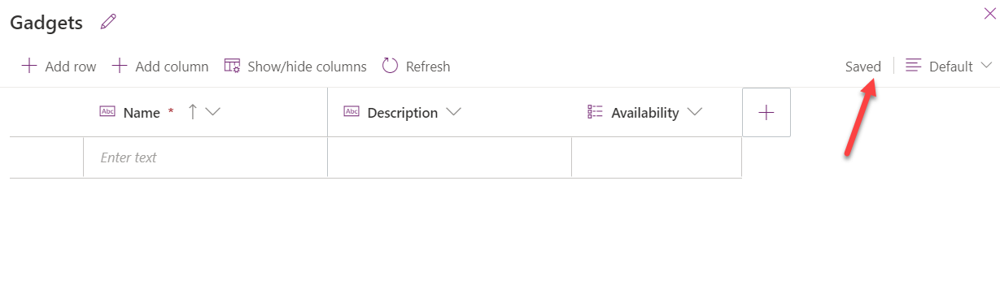

[!NOTE] Effective November 2020:
- Common Data Service has been renamed to Microsoft Dataverse. Learn more
- Some terminology in Microsoft Dataverse has been updated. For example, entity is now table and field is now column. Learn more
Lab 03.1: Create apps in Teams
Scenario
It is not uncommon for organizations to accumulate unused computer Peripherals, power cords and other electronics. Your organization is taking steps to reuse existing devices and computer peripherals before ordering new equipment.
You are asked to create an application where users can post devices they no longer need and browse through what their colleagues posted.
Requirements
1) Application must use Dataverse for Teams. 2) Users should be able to create new items, edit items they created and see items created by other users. 3) Items should be removed from the list if they are no longer available. 4) Allow users to reserve an item. 5) Allow user to mark item for pick up. 6) If item is reserved, only reserved user should be able to mark item picked up. 7) Users should be able to search items.
What you will learn
1) How to create an application using Dataverse for Teams. 2) How to publish application. 3) How to give other users permission to your application.
Detailed steps
Exercise 1: Get started with Microsoft Dataverse for Teams
In this exercise, you will create a new team and install Power Apps for Teams.
Task 1: Create team
In this task you will create a new team
- Navigate to Microsoft Teams.
- Select Teams, click Join or create a team and click Create Team.
- Select From scratch.
- Select Public.
- Enter Green for Team name and click Create.
- Click Skip.
- You should now have a new team named Green.
- Do not navigate away from this page.
Task 2: Install Power Apps
In this task you will install Power Apps for Teams.
- Click on the … More added apps, search for power apps and select Power Apps.
-
Click Add.
-
Right click on the Power Apps tab and select Pin.
Exercise 2: Create application
In this exercise, you will provision Dataverse for Teams by creating an application and you will also create a Dataverse table with columns.
Task 1: Create application
In this task, you will provision Dataverse for Teams by creating an application.
-
Navigate to Microsoft Teams.
-
Select Power Apps and click Start now.
- Select the Green team you created and click Create.
- Enter Upcycle for App name and click Save.
- Do not navigate away from this page.
Task 2: Create table
In this task, you will create a table and columns.
- Click With data and select + Create new table.
- Enter Gadget for Table name and click Create.
- Click + Add column.
- Enter Description for Name select Text for Type, and click to expand the Advanced options section.
- Change the Max length to 500 and click Create.
- Click + Add column again.
- Enter Availability for Name, select Choice for Type, enter Available for the first choice and click + New choice.
- Enter Reserved for the second choice and click + New choice.
- Enter Picked up for the third choice and click Create.
- Your table screen should now look like the image below. 
- Close the table editor by clicking on the Close button.
- Do not navigate away from this page.
Task 3: Add columns
In this task, you will add new columns to the table.
- Select the Home tab and click See more.
- Click to open the Gadget table.
- Click + Add column column.
- Enter Location for Display name, select Text for Data type, make the column Required and click Done.
- Click + Add column.
- Enter Photo for Display name, select Image for Data type, check the Primary image checkbox and click Done.
- Click + Add column.
- Enter Reserved by for Display name, select Lookup for Data type, select User for Related table and click Done.
- Select the Availability column.
- Select Available for Default value and click Done
- Click the Save table button located on the bottom right of the screen.
- Do not navigate away from this page.
Task 4: Edit the application
In this task, you will edit the application by filters for gadgets that are available and edit the form.
- Select the Home tab and click to open the Upcycle application you created.
- Select Screen1. If the screen already contains the form, move to the next step, otherwise click With data and select Gadgets table under Current environment. That will create the screen elements including the form.
- Make sure RightContainer1 is expanded and select the EditForm1 control from tree view.
- Go to the Properties pane and click Edit fields
- Click on the + Add field button.
- Select the fields that does not exist on the EditForm control from the below list and click Add.
- Name
- Description
- Availability
- Location
- Reserved by
- Photo
- Remove any extra fields and close the Fields pane. Your form should only have Name, Description, Availability, Location, Reserved By and Photo columns.
- Change Columns for Snap to columns to 1.
- Select the Photo inside the canvas and change Width to 400.
- Expand the form and select the Reserved by data card.
- Go to the Properties pane, select the Advanced tab and click Unlock.
- Search for display and change the DisplayMode value to DisplayMode.View.
- Select the Browse gallery.
-
Select Items form the formula bar and replace the value with formula below. This formula will filter the gadgets to show only the available gadgets
Filter(Gadgets, Availability <> 'Availability (Gadgets)'.'Picked up')
- Select the Image inside the gallery.
- Go to the formula bar and change the value of the Image to the formula below.
ThisItem.Photo
- Select the Data tab, click on the …More actions button of the Gadgets table and select Refresh.
- Click Save and wait for the app to be saved.
- Click Preview.
- Click + New record.
- Fill out the form and click Tap or click to add a picture.
- Provide your own photo or select one from the lab resources folder.
- Click Save.
- Add few more items.
- Your app should now look like the image below. Close the preview.
- Do not navigate away from this page.
Task 5: Update Dataverse rows
In this task, you will add buttons that will let users reserve and/or pick up item, you will also update the rows in Dataverse as reserved or picked up.
- Select App from the Tree view and set the OnStart value to the formula below. This formula will create a variable named CurrentUser and set its value to the first user that matches the logged in user’s email.
Set(CurrentUser, First(Filter(Users, 'Primary Email' = User().Email)))
- Select App, select ellipsis and select Run OnStart.
- Select the RightContainer.
- Click on the + Insert button and select Button.
- Select the Tree view, double click on the button you just added and rename it Reserve Button.

- Set the Text value of the Reserve Button to Reserve.
- Move the Reserve Button and place it next to the Image.
- Set the DisplayMode value of the Reserve Button to the formula below. This formula will disable the button if the selected item is not available.
If(BrowseGallery1.Selected.Availability = 'Availability (Gadgets)'.Available, DisplayMode.Edit, DisplayMode.Disabled)
- Set the OnSelect value of the Reserve Button to the formula below. This formula will update the selected record by setting the reserved by value to the current user and the availability value to reserved.
Patch(Gadgets, BrowseGallery1.Selected, {Availability: 'Availability (Gadgets)'.Reserved, 'Reserved by': CurrentUser})
- Set the Visible value of the Reserve Button to the formula below. This formula will hide the button if the user is creating a new record.
If(EditForm1.Mode = FormMode.View, true, false)
- Select the RightContainer again.
- Click on the + Insert button and select Button again.
- Select the Tree view, double click on the button you just added and rename it Picked Up Button.
- Set the Text value of the Reserve Button to Picked up.
- Adjust the width and move the Picked Up Button and place it to the right of the Reserve Button.
- Set the DisplayMode value of the Picked Up Button to the formula below. This formula will disable the button if the selected item is reserved and the reserved by user is not the current user.
If(BrowseGallery1.Selected.Availability = 'Availability (Gadgets)'.Reserved And BrowseGallery1.Selected.'Reserved by'.'Primary Email' <> CurrentUser.'Primary Email', DisplayMode.Disabled, DisplayMode.Edit)
- Set the OnSelect value of the Picked Up Button to the formula below. This formula will update the selected record by setting the reserved by value to the current user and the availability value to picked up. The second formula will select the first item of the gallery.
Patch(Gadgets, BrowseGallery1.Selected, {Availability: 'Availability (Gadgets)'.'Picked up', 'Reserved by': CurrentUser});Select(BrowseGallery1,1)
- Set the Visible value of the Picked Up Button to the formula below. This formula will hide the button if the user is creating a new record.
If(EditForm1.Mode = FormMode.View, true, false)
- Click Save to save your changes.
- Do not navigate away from this page.
Task 6: Add search
In this task, you will add search capability to your application.
- Select the RightContainer.
- Click on the + Insert menu and select + Add icon.
- Place the icon above the form.
- Select the icon, go to the Properties and select Search for Icon.
- Click on the + Insert menu and select Text box.
- Select the Tree view.
- Select the text box you just added and rename it Search box.
- Place the Search Box to the right of the icon.
- Select the Search Box and set OnChange value to the formula below. This formula will reset the gallery.
Reset(BrowseGallery1)
- Select the BrowseGallery and change the Items formula to the formula below. The formula is incomplete, we will complete it in the next step.
Filter(Search(Gadgets, 'Search Box'.Value, ), Availability <> 'Availability (Gadgets)'.'Picked up')
- Place your cursor after ‘Search Box’.Value and type name. You should see a suggestion with crxxx_name, select the suggested column.

- Add comma after the name column you just selected and type description and select the suggested column again.
- Your formula should now look like the image below. This formula will search the name and description columns of the gadgets table for whatever the user types in the text box and filter out the picked up items.
- Select the Search Box.
- Go to the formula bar and remove the Value text.
- Click Save to save your changes.
Exercise 3: Test and publish application
In this exercise, you will test, publish and give colleagues permission to use the application.
Task 1: Test application
In this task, you will test the application.
- Click on the Preview button.
- The Reserve and Picked up button should be visible and enabled.
- Search for cable. The gallery should show items that have the text cable in the name or description column.
- Select one of the items, the Reserved by column value should be empty.
- Click on the Reserve button.
- The Reserve button should become disabled and the reserved by value will be set to your username. Click on the Picked up button.
- The item should no longer show up on the gallery and the first item of the gallery should get selected.
- Close the preview.
- Do not navigate away from this page.
Task 2: Publish application
In this task, you will publish the application to Teams.
- Click on the Publish to Teams button.
- Click Next.
- Click + add app as a tab.
- Click Save and close
- Select Teams and select the new Upcycle tab.
- The app should load. If the app is not loaded, refresh the page.
- Test the application in Teams and make sure it behaves as you expected.
Task 3: Give permissions
In this task, you will give your colleagues permission to create new items, edit items they created, delete items they created and read items created by other people.
- Select Power Apps and click on the See more link.
- Click to open the Gadget table.
- Click Manage permissions.
- Select Members, select Collaborate permission and click Save
- You may test the application with another user and see how it behaves.